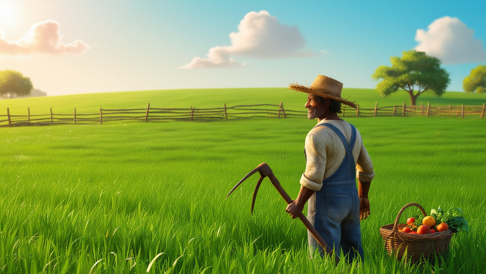
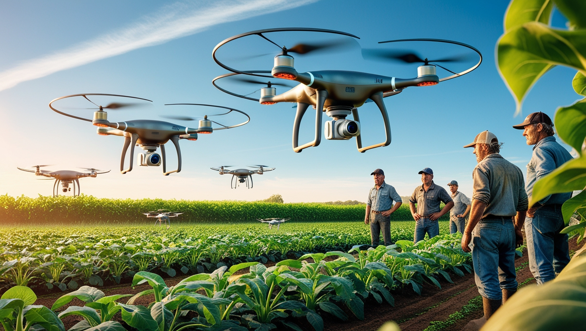

Do campo a cidade colhendo oportunidades


O contraste entre campo e cidade é uma marca indelével de muitas sociedades,
refletindo uma dualidade que, apesar das diferenças, oferece um campo fértil para o crescimento
e a inovação. Ambas as esferas têm seu valor único e suas oportunidades especiais, e
a interação entre elas pode criar um ambiente dinâmico de prosperidade e desenvolvimento.
A utilização de drones no cultivo e plantio marca uma revolução no setor agrícola, trazendo uma
nova perspectiva de precisão e eficiência para as práticas tradicionais.
Com o avanço das tecnologias e a crescente demanda por uma agricu
ltura mais sustentável e produtiva, os drones emergem como ferramentas essenciais para a modernização das técnicas agrícolas